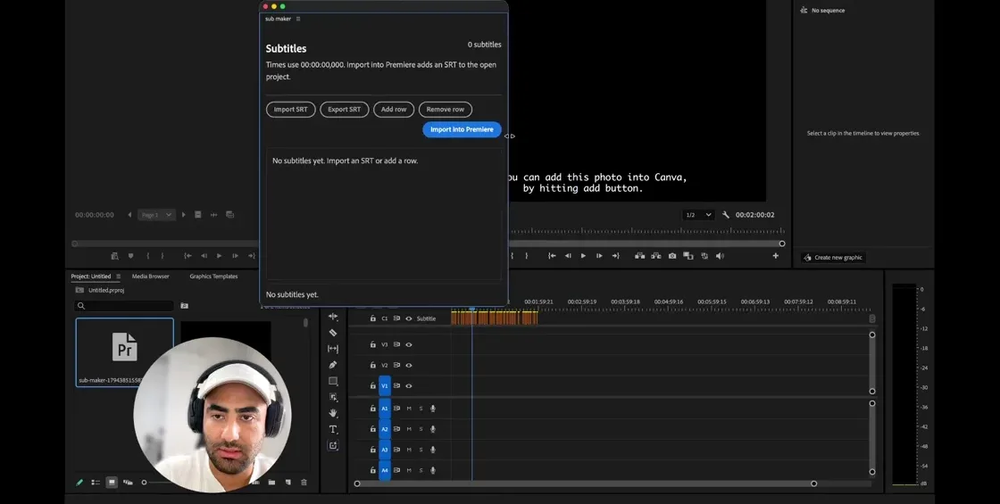

Host-specific guidance
Work with documentation for Premiere Pro, Photoshop, InDesign, Media Encoder, Illustrator, or After Effects.
Adobe desktop plugin development
Take a plugin idea from a sentence to an installable CCX, with checks guided by the Adobe app it will run in.

Choose the Adobe app, project folder, and permissions before scaffolding.
Use a searchable copy of Adobe’s documentation to guide the implementation.
Run the build and available tests, check API use and permissions, and create a CCX.
Load the plugin in the target app and share screenshots or feedback for another revision.
Work with documentation for Premiere Pro, Photoshop, InDesign, Media Encoder, Illustrator, or After Effects.
Checks cover the code and package. TypeScript checks run when the project supports them.
Use the same plan, check, and feedback loop to extend a project you already ship.
Requires Node.js 20 or newer and Git.
git clone https://github.com/ThisIsMrAli/uxp-assistant.git
cd uxp-assistant
node install-agents.mjs --globalTry this prompt
Use uxp-assistant to create a Premiere Pro plugin that adds subtitles from text.
Open your project in Codex after running the installer. Ask for uxp-assistant by name in a new chat.
Open your project in Claude Code after running the installer. Ask for uxp-assistant by name in a new chat.
Open your project in Cursor after running the installer. Ask for uxp-assistant by name in a new chat.
The installer also links the skill into supported locations for tools such as Gemini CLI and Windsurf. Keep the checkout on disk so the links continue to work.